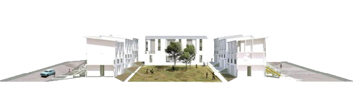
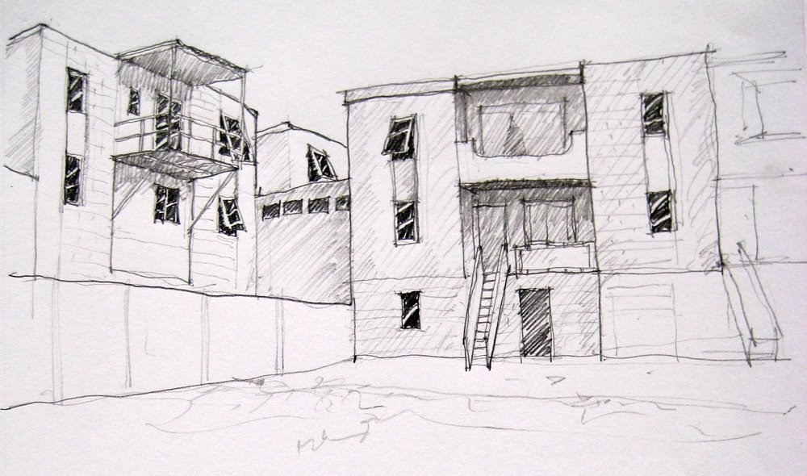
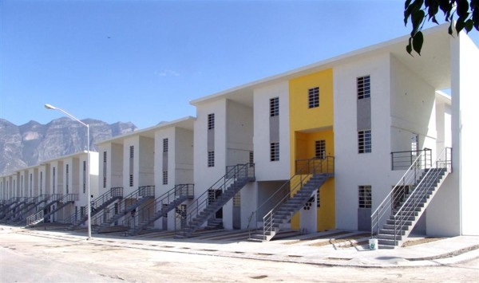
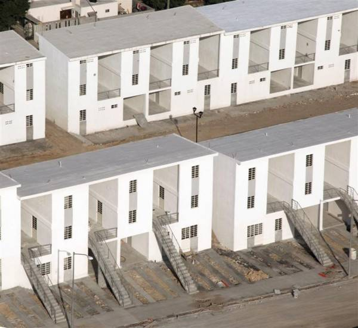
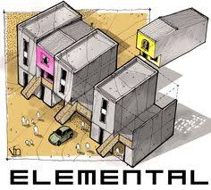

UN COMPLESSO DI ABITAZIONI
Primo progetto fuori dai confini cileni per lo studio d'architettura Elemental, nella città di Santa Catarina nel Messico nord occidentale. Il governo messicano ha richiesto la realizzazione di 70 abitazioni in un'area di 6 ettari. Per l'alta densità abitativa richiesta i progettisti hanno deciso di usare la tipologia di abitazioni in linea realizzata a Iquique, adattandola alle diverse condizioni climatiche. Gli edifici sono cortine a tre piani e su ciascun lato dell'area occupano le fasce esterne a diretto contatto con lo spazio urbano, lasciando al centro uno spazio verde comune. Ogni costruzione è costituita da moduli ripetuti con un'alternanza di vuoti e volumi pieni, coperti dal tetto continuo che protegge dalla pioggia anche il vuoto a doppia altezza. In ciascun modulo il piano terra è costituito da una casa di circa 40 mq, mentre ai piani superiori è un appartamento su due livelli di circa 78 mq. Il 50% delle abitazioni sarà autocostruito, i progettisti hanno pertanto fissato un ritmo per evitare che la costruzione spontanea deteriorasse l'ambiente urbano.

Lo studio Elemental con a capo l'architetto Alejandro Aravena (in foto) concentra i suoi sforzi sul miglioramento delle condizioni urbane della fascia più povera della popolazione, in una prospettiva di “economia urbana sostenibile”, nella convinzione che il nuovo obiettivo della città sostenibile non debba assolutamente essere scisso dalla lotta per una maggiore equità, una lotta portata avanti a partire dal XX secolo anche attraverso lo sviluppo dell’edilizia sociale. L’innovazione di Elemental è nel sistema della costruzione aperta, metodologia progettuale alla base della quale vi è la volontà di dare risposta alla crisi degli alloggi frenando l’espansione delle baraccopoli che circondano tutte le città e creando uno stretto rapporto tra temi ecologici e temi sociali. La costruzione aperta è un metodo sperimentato per la prima volta a Iquique, in un quartiere creato nel 2004 per assorbire le baraccopoli del centro città. Elemental riesce a realizzare un complesso edilizio per 100 famiglie usando i fondi del programma pubblico chiamato Vivienda Social Dinamica sin Deuda (Edilizia sociale dinamica senza debiti). Poiché questo denaro basta ad acquistare il terreno e a realizzare solo parzialmente gli alloggi, da quest’insufficienza di fondi nasce l’idea di una tipologia abitativa aperta, che consenta di consegnare agli abitanti case semicostruite, del cui completamento si occuperanno da soli.

Elemental realizza l’essenziale, tutto quanto gli abitanti non sono in grado di realizzare da soli con alti standard qualitativi, ossia la struttura portante, l’involucro, la copertura, gli impianti e le stanze di servizio con acqua corrente; rimane il vuoto di uno spazio non costruito, suscettibile ad essere “riempito” successivamente secondo le possibilità e il gusto di ognuno. Questa soluzione economicamente strategica ha un contenuto altamente ecologico. La flessibilità della struttura dell’alloggio e la sua reversibilità sono le chiavi per garantirne la sostenibilità, ma anche per opporsi al fenomeno della gentrificazione, del consumo di nuovo suolo e del fenomeno dell’esclusione sociale. Il valore dell’architettura di Elemental non è da ricercare nel linguaggio o nelle sue qualità figurative, bensì nella capacità di declinare l’architettura come un servizio alla società e non come veicolo della vanità dell’architetto, rinunciando a qualsiasi ambizione formale.
   
Foto di ELEMENTAL http://www.elementalchile.cl/en